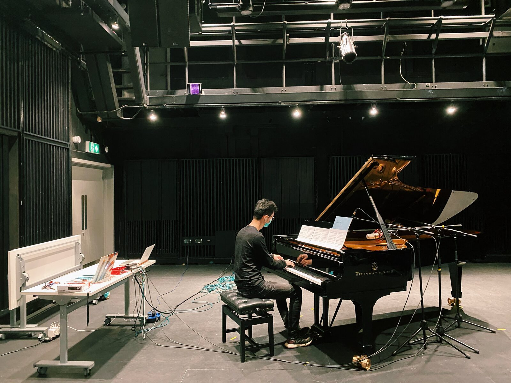

Still Life ---for piano and live electronics
PROJECT DESCRIPTION
This work shows the alternation and opposition of two musical emotions. The musical gestures in traditional music score are amplified and deepened by live electronics. Through the performer's expression of the score and the blessing of different electronic effects, the contrast between the various parts of the work is more vivid. An interactive system that can be controlled by the performer himself has been established for the performer, who can use traditional piano performance techniques to play the piano and live electronics simultaneously. For the performer, the subtle changes in electronic effects are a brand-new experience. He can achieve the fusion effect of traditional piano and technology by learning and controlling the characteristic data during the performance.
The work is divided into 10 sections (ABCDEFGHIJ), containing 10 interactive scenarios. The on-site microphone detects the piano performer’s 5 performance characteristic parameters (attack peak, loudness, pitch, spectrum centroid, partials) in real time, and then maps them to the internal parameters 4 modules (4 electronic effects). The interaction scenarios include the use of a single module and the use of multiple modules.
PROGRAM NOTES
The tense and mellow musical emotions in the work are alternately expressed in a Rondo-like pattern. This kind of ambivalence can also be felt in human society under the gloom of the epidemic. After the lockdown, the whole world was stagnant, but on the contrary, everyone's heart was panic and restless.
This piece uses the "Still Life" as an extreme metaphor to describe the dual characteristics shared by life under the epidemic, in which the other side hidden behind the surface of "stillness" and "inanimate" of still life may be perceived. The constantly switching musical emotions convey this strong contrast, while another kind of despair and struggle is also increasingly intensified in the conflict.
PERFORMANCE REQUIREMENTS
Performer: Piano performer
This work is suitable for concert with speakers.
* Music score in Supplementary Material.
List of technical requirements
• 1 computer running Max/MSP software
• 1 interface (4in/4out)
• 3 microphones (1 Small diaphragm cardioid condenser microphone for detection and 2 Large diaphragm cardioid condenser microphone for amplification) and 3 stands
• Some cables (3 microphones cables and 2 XLRs)
MEDIA
photograph：

video：
Still Life —for piano and live electronics